Com cards visuais para aprenderes exatamente onde pressionar e como aplicar
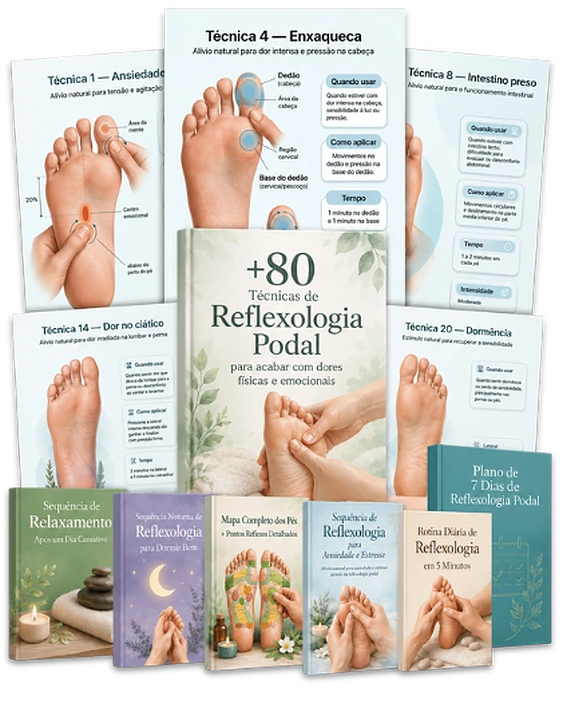
🔒 Compra Segura ⚡ Acesso Imediato
MAIS DE 1.000 CLIENTES!
A reflexologia podal utiliza pontos específicos nos pés associados a diferentes regiões do corpo. Ao estimular esses pontos da forma correta, muitas pessoas relatam sensação de relaxamento, redução da tensão e mais bem-estar. O segredo está em saber exatamente onde pressionar, por quanto tempo e com qual intensidade.
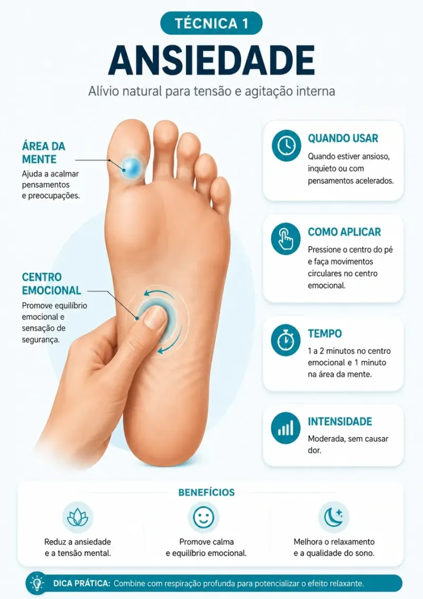
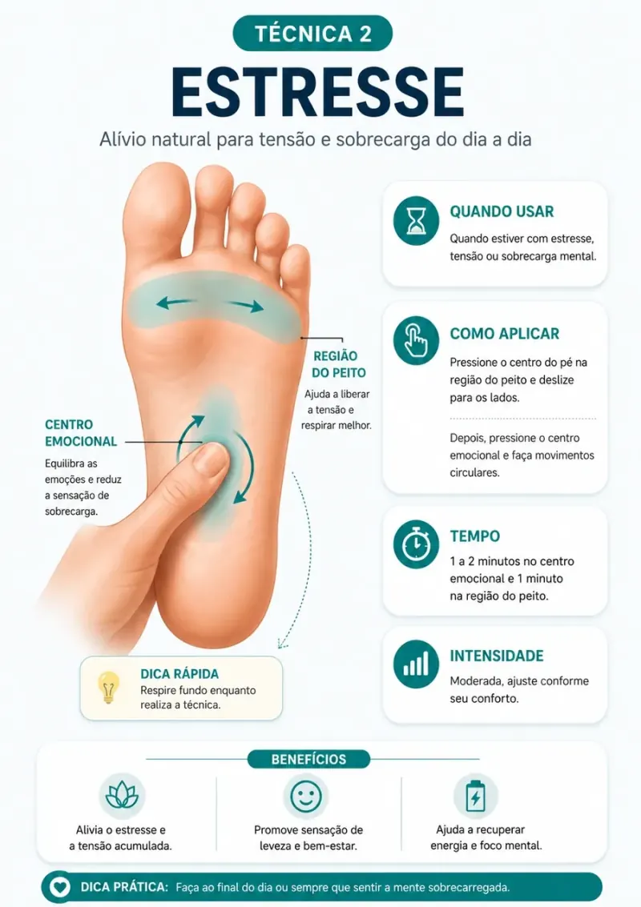
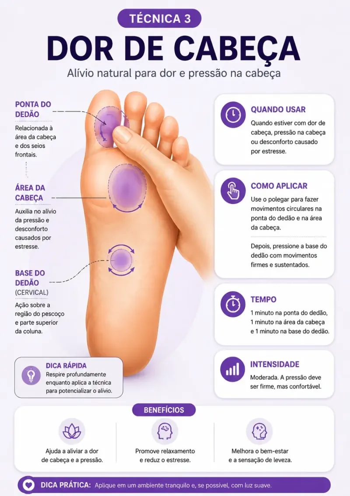
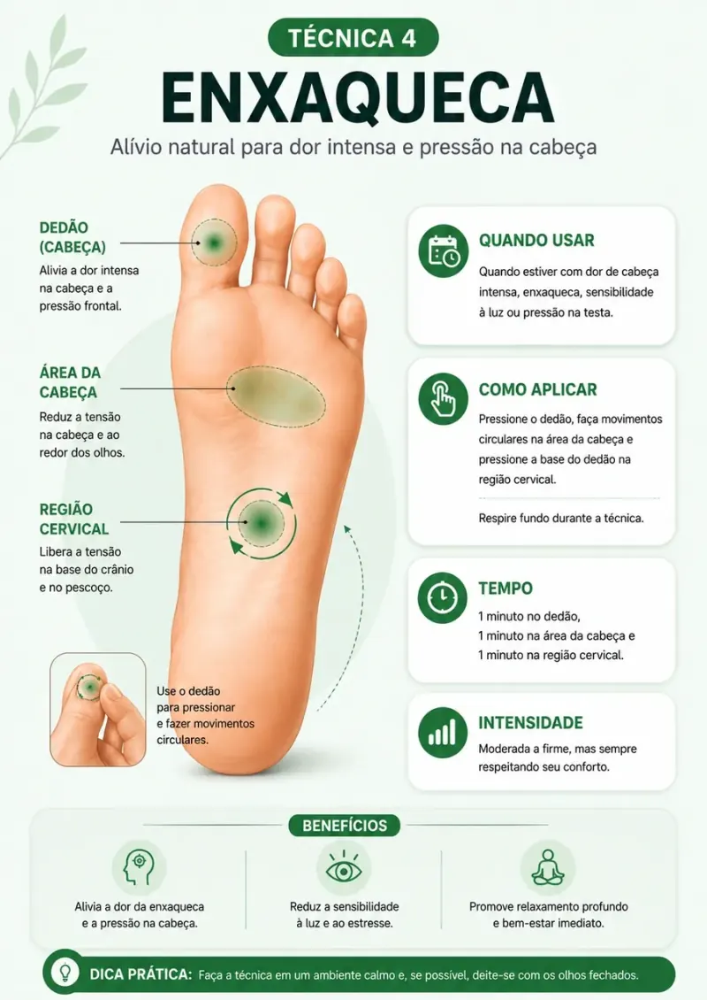
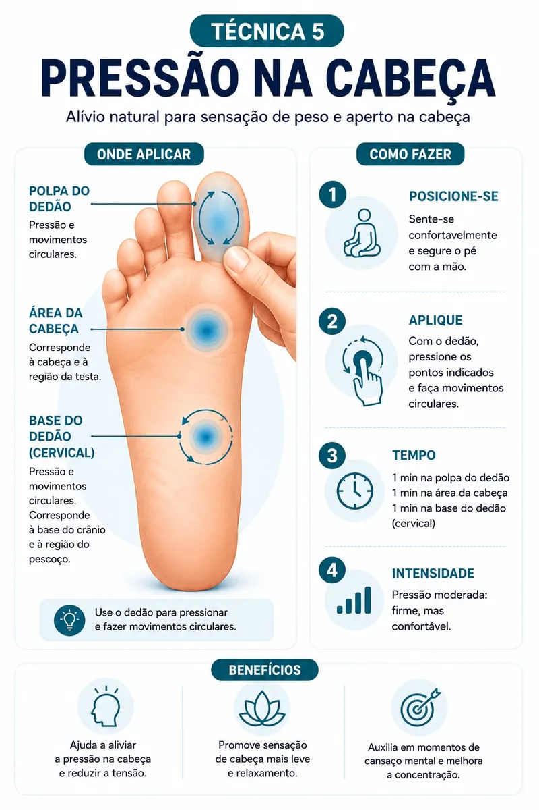
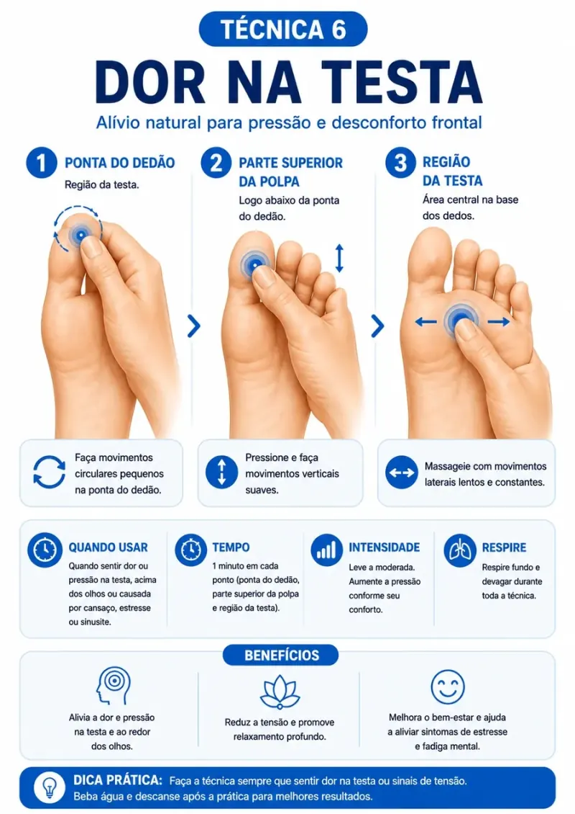
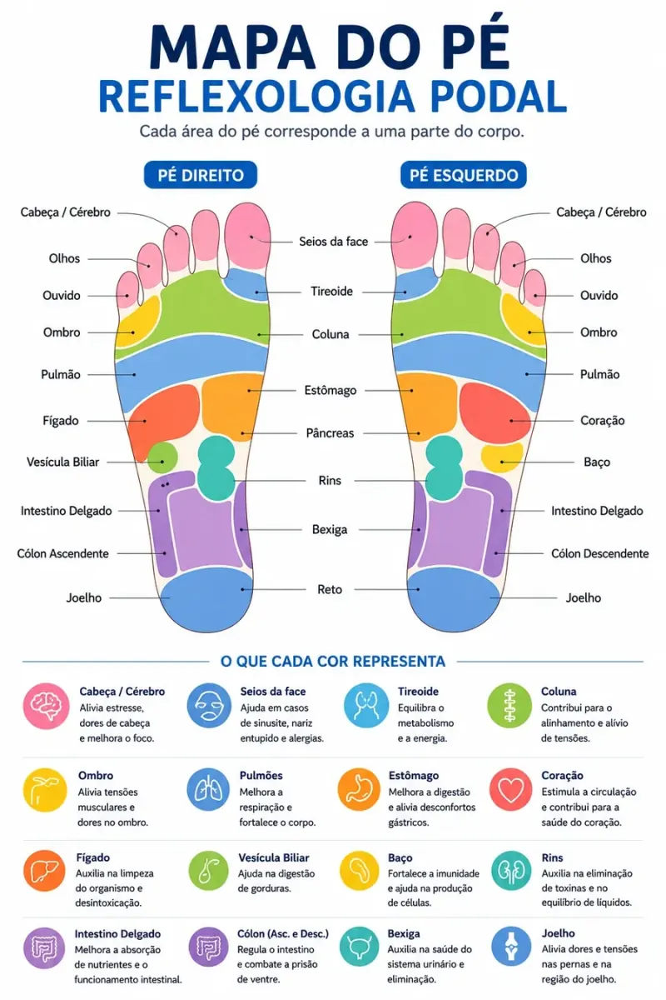
Não precisas de decorar nada. É só seguires o cartão.
Sofres com dores frequentes e não queres depender de medicamentos
Tens crises de enxaqueca que aparecem na hora errada
Queres saber o que fazer no momento exato em que a dor no corpo começa
Já tentaste de tudo e queres uma técnica simples para testar em casa sempre que sentires tensão, dor ou desconforto
Queres ter controlo sobre a tua própria dor, sem precisares de mais ninguém
Ao estimular pontos específicos, ajudas a acalmar a mente e a diminuir aquela sensação constante de preocupação.
O teu corpo desacelera naturalmente, reduzindo a tensão acumulada e trazendo uma sensação real de alívio.
As técnicas ajudam a libertar a rigidez do corpo, deixando-te mais solto e confortável ao longo do dia.
Relaxas mais rápido antes de dormires e acordas com o corpo mais descansado e disposto.
Também vais receber…
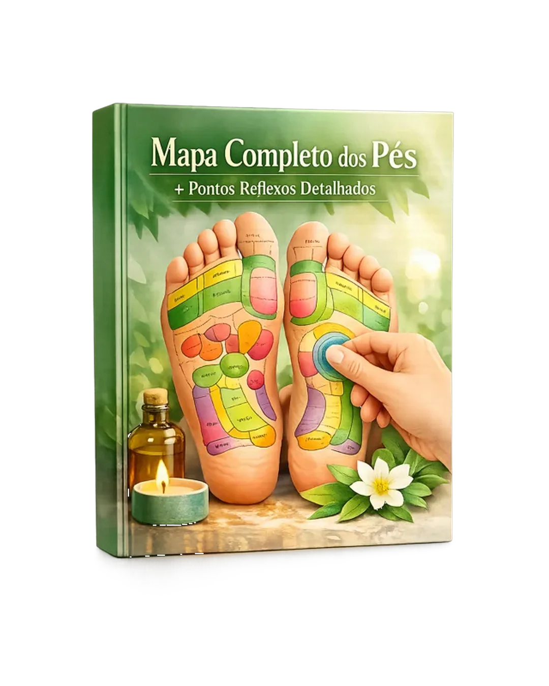
Tem uma visão completa dos pés com todos os pontos organizados por regiões do corpo, facilitando a identificação e aplicação das técnicas sem confusão.
Valor: 19 € GRÁTIS
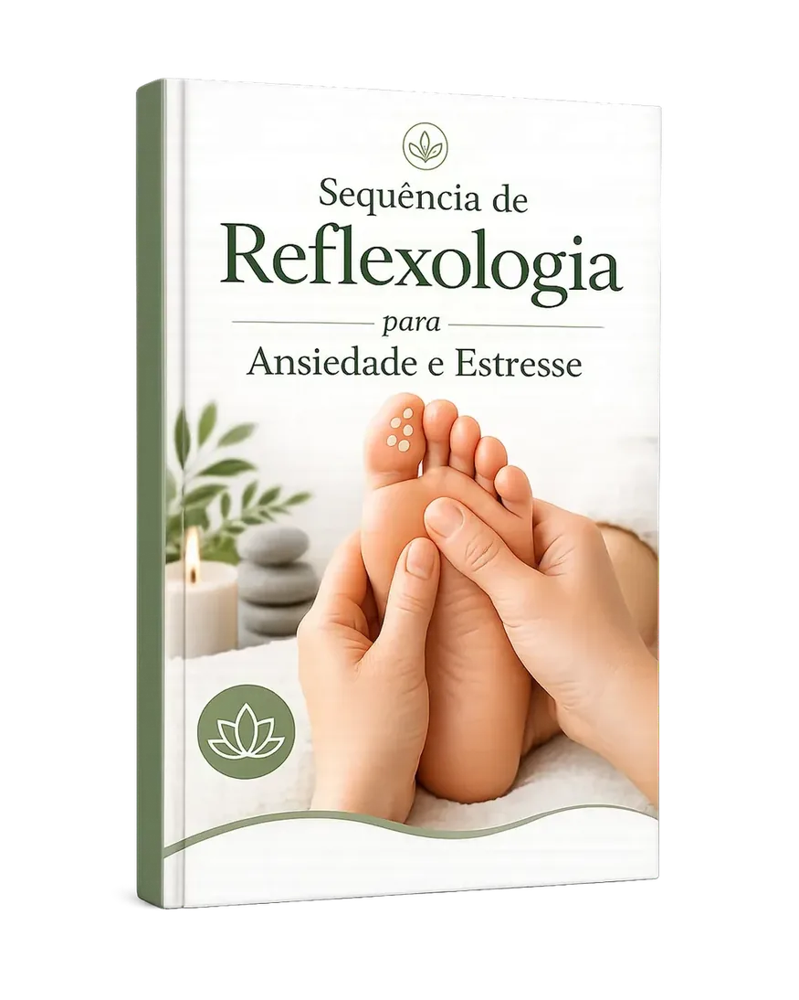
Aprende uma sequência simples de pontos específicos para acalmar a mente, reduzir o stress e aliviar a ansiedade no dia a dia.
Valor: 19 € GRÁTIS
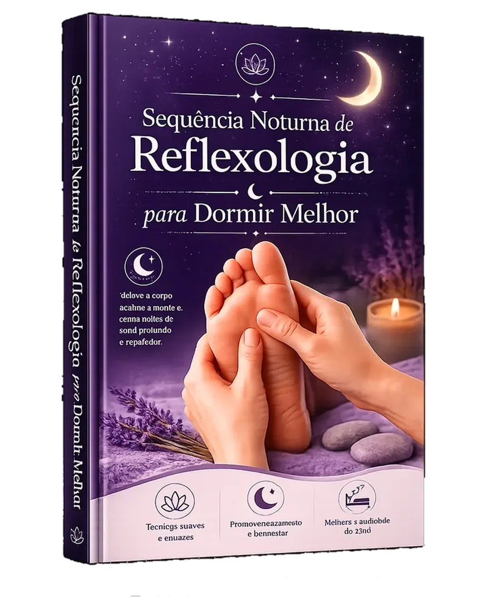
Uma rotina prática para aplicar antes de dormir e ajudar o corpo a relaxar, facilitando um sono mais profundo e tranquilo.
Valor: 19 € GRÁTIS
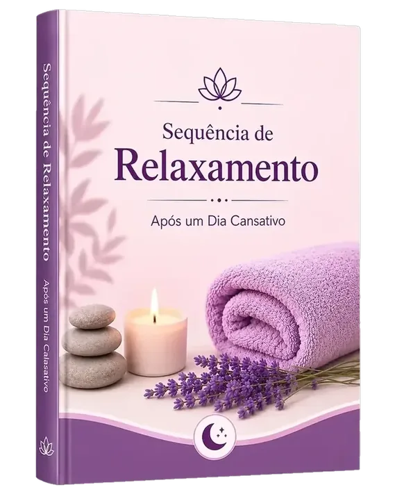
Alivia o cansaço físico e mental com uma sequência de pontos que ajudam a soltar a tensão e trazer sensação de leveza no corpo.
Valor: 19 € GRÁTIS
Sabe exatamente o que fazer todos os dias, em poucos minutos, para manteres o corpo mais relaxado, com menos dor e mais equilíbrio.
Valor: 19 € GRÁTIS
Vais receber um certificado digital que reconhece a tua participação e dedicação à aprendizagem das Técnicas de Reflexologia Podal.
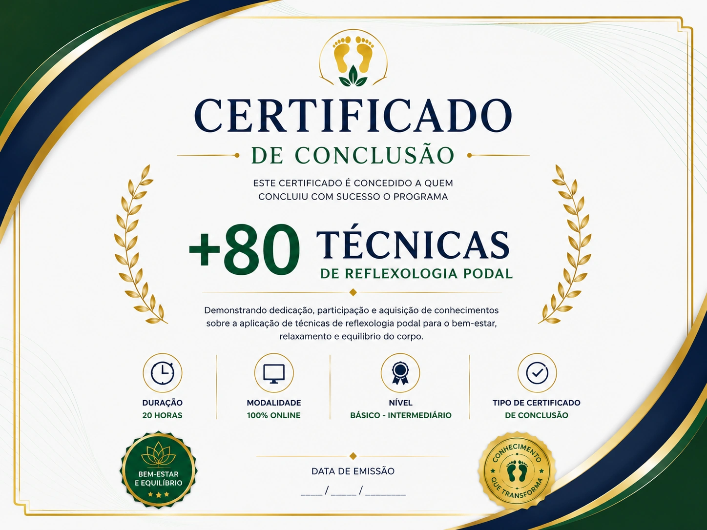
Vais ter acesso a um guia completo de Reflexologia Podal para consultares sempre que quiseres e aplicares ao teu ritmo, sem mensalidades e sem complicações.
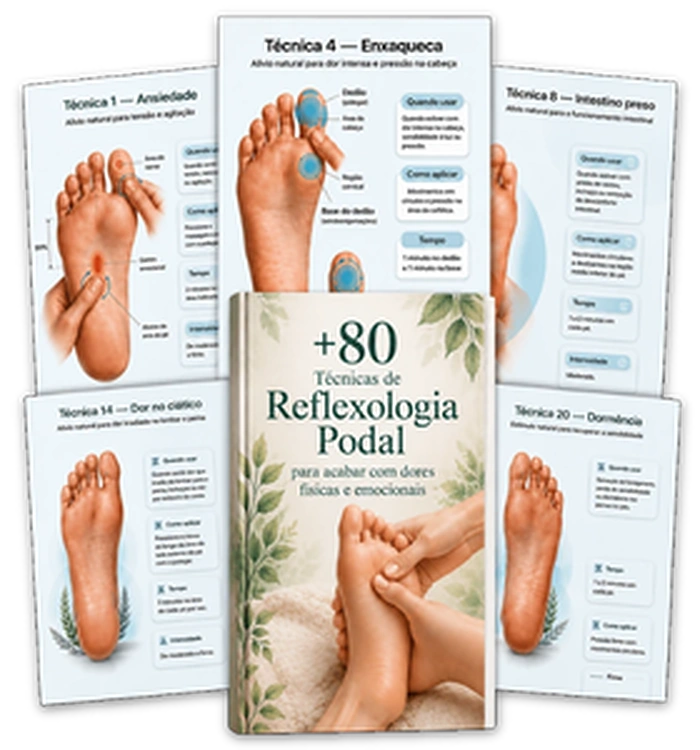
4,90 €
VOU QUERER ESSE AQUI92% das pessoas aproveitam a oferta abaixo:
↓
Todos os bónus incluídos
de 89,00 € por:
17,90 €
ou 4x de 4,48 € no cartão
Poupas 71,10 €
VOU QUERER ESSE AQUIÉ muito rápido! Em apenas 3 passos já começas a usar:
Pagamento 100% seguro por cartão ou MB WAY. Demora menos de 1 minuto.
Na hora recebes o link de acesso no teu e-mail e também no WhatsApp.
Abre no telemóvel, tablet ou computador e segue o passo a passo. Simples assim!
Podes aceder a todo o material, aplicar as técnicas e sentir a diferença no teu corpo. Se não for para ti, pede o reembolso em 15 dias. Ou aprende uma técnica para a vida — ou recebe 100% do dinheiro de volta.